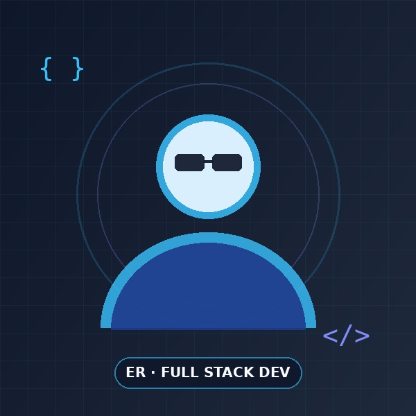
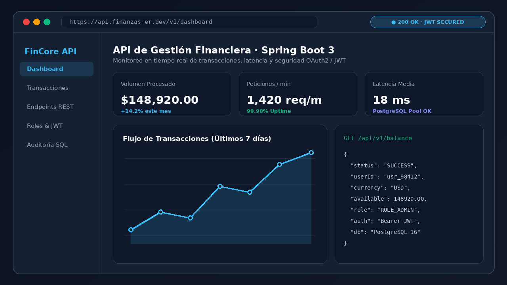
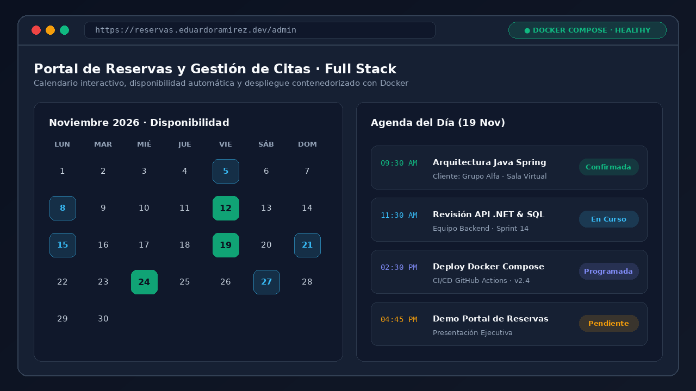

Backend
Java, Spring Boot, Spring Data JPA, Hibernate, Spring Security, .NET Core, .NET Framework, C#, APIs REST y Clean Architecture.
● El Salvador · Disponible para proyectos
Licenciado en Informática con experiencia en desarrollo de software Full Stack, especializado en Java (Spring Boot), .NET Core, Angular, React y bases de datos SQL Server. Enfocado en soluciones empresariales escalables con Clean Architecture, Docker y despliegues CI/CD en Microsoft Azure.

Tecnologías, frameworks y herramientas que domino para desarrollo empresarial de extremo a extremo.
Java, Spring Boot, Spring Data JPA, Hibernate, Spring Security, .NET Core, .NET Framework, C#, APIs REST y Clean Architecture.
Angular, React, TypeScript, JavaScript (ES6+), HTML5, CSS3 y Bootstrap para interfaces dinámicas y responsivas.
SQL Server, MySQL, Stored Procedures, Triggers, optimización de consultas transaccionales y analítica con Power BI.
Docker, Portainer, Microsoft Azure, Git, GitHub Actions, Jenkins, Postman y flujos asistidos con IA (Copilot, Claude, Gemini).
Sistemas empresariales desarrollados y liderados en entornos productivos. Haz clic para ver los detalles.

Plataforma clínica de alta disponibilidad para gestión de pacientes, cobros en tiempo real y procesos médicos automatizados.

Sistemas de facturación electrónica y declaraciones de mercancías con APIs RESTful, DTOs e integración en Microsoft Azure.

Gestión operativa de inventarios en tiempo real con contenedores Docker y dashboards financieros conectados a SQL Server.
Experiencia comprobada en desarrollo empresarial y formación académica continua.
Enterprise DataBase El Salvador
Desarrollo de módulos clínicos de alta disponibilidad, APIs RESTful en .NET Core / .NET Framework, interfaces en Angular y optimización de SQL Server.
Textiles Opico S.A. de C.V.
Liderazgo en sistemas de Facturación Electrónica, Inventarios y Declaraciones de Mercancías con Spring Boot, Clean Architecture, Docker, Azure y Power BI.
Textiles Opico S.A. de C.V.
Control operativo y digital de inventarios de materia prima, auditorías periódicas e informes de consumo para abastecimiento continuo.
Universidad de El Salvador
ESIT · El Salvador
Universidad de El Salvador
Instituto Nacional Candelaria de la Frontera
Disponible para posiciones como Desarrollador Full Stack (Java / .NET / Angular / React) o consultoría de software empresarial en El Salvador y modalidad remota.